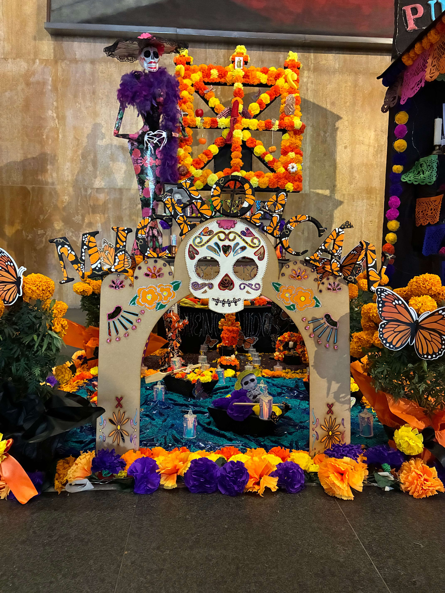

Ofrenda a las ánimas
Bienvenido a nuestra ofrenda. Un homenaje reverente a la noche sagrada de Janitzio y las almas que cruzan el lago en alas de la mariposa monarca.
Estructura:
Las tres cruces superiores del arco u’atsakurï representan el nivel celestial. Por este portal las almas reciben permiso para transitar hacia el plano terrenal. Convertidas en mariposas monarca, vuelan sobre el lago hacia Janitzio.
Aquí se espera a los difuntos con lo que disfrutaron en vida: frutas, corundas y pan de muerto, a veces con forma humana. Se sirven en barro verde, candeleros de cobre y catrinas de barro rojo hechas por artesanos de la región. El cempasúchil (tiringuini tzintziqui) y las velas iluminan el altar hasta el amanecer del 3 de noviembre.
Es el reino de la noche, donde yacen en silencio (uirucumani) quienes ya partieron, como Alfonso García Robles, cuya foto está en el altar. Cada 2 de noviembre cruzan hacia este mundo para convivir con sus parientes.
Perspectivas del Altar
Detalles y ángulos de nuestra ofrenda en Planta Baja.
Elementos Sagrados
Elementos presentes en nuestra ofrenda física y su significado ancestral.
Para los purépechas representan a los ancestros que regresan a visitarlos en Día de Muertos, y en su lengua se les llama parákata. Su migración comienza en octubre y su llegada a México coincide con la fiesta.
Decora las tumbas en forma de cruz, con pétalos regados o dibujando corazones. En los altares también forma caminos de pétalos.
En Santa Clara del Cobre, el trabajo del cobre martillado tiene raíces prehispánicas. Sus artesanías ya cuentan con denominación de origen.
Las primeras catrinas de barro de Capula aparecieron en los años setenta, cuando Juan Torres se inspiró en el personaje de Posada. Hoy hay alrededor de 250 talleres dedicados a ellas.
En la noche del 1 de noviembre, la gente navega en canoas iluminadas con velas hacia el panteón de Janitzio, donde rodea las tumbas con ofrendas y cempasúchil. En el Word se llaman icharutas o tirikua.